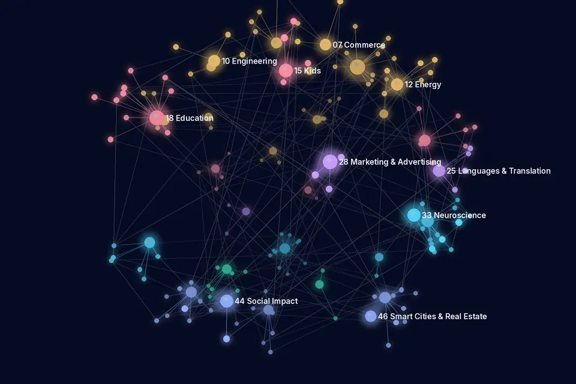

Journal of the AI Universe ✦ Research Papers Today
Research Papers Today
23 November 2026 · 218 new AI research papers in 32 of the 50 categories · Curated by Dr.P.R.K.Varma
210 peer-reviewed papers and 8 preprints, compiled automatically from arXiv, medRxiv, bioRxiv, PubMed, Crossref, OpenAlex, preprint servers via Crossref (Research Square, Preprints.org, SSRN and others), arxiv_rss, europepmc, s2. Each line gives the title (linked), authors, venue, date, evidence label and identifier. Abstracts and figures are not reproduced: open the paper to read it. A listing is not an endorsement, and preprints have not been peer-reviewed. Health papers are not medical advice.
Research map in 3D
23 November 2026: the top 144 papers in 32 categories as a 3D network. Large points are categories, small points are papers (brighter = peer-reviewed), and faint lines join papers in different categories that share a topic word in their titles. Drag to rotate, pinch or use + and − to zoom, and tap a paper to open the original. Titles and links only.

Papers per category (32 categories)
01–14 Industries & Sectors 85 papers
01 AI Filmmaking
1 paper · 1 preprintProject page →- MultiBinder: Preventing Multi-Subject Identity Leakage in Personalized Video GenerationWei Li, Yiheng Zhang, Zhaofan Qiu et al.arXiv (cs.CV) · · Preprint · arXiv:2611.26164 · Open access
02 AI Agriculture
5 papers · 5 peer-reviewedProject page →- DB-YOLO: structure-sensitive real-time segmentation of underwater aquaculture cage-nets on an edge deviceYu C, Liu D, Tong Z et al.Computers and Electronics in Agriculture · · Peer-reviewed · DOI 10.1016/j.compag.2026.112730
- Dairy consumption and bone mineral density in Japanese adults: a longitudinal analysis and machine-learning models from the Iwaki Health Promotion ProjectNakano A, Shinya T, Tsuda T et al.Bone reports · · Peer-reviewed · DOI 10.1016/j.bonr.2026.101973 · PMID 43068012 · Open access
- Monitoring Soybean Growth and Estimating Yield under Contrasting Fertilizer Practices Using LAUAV Multi-Sensor Data Fusion and Machine LearningIjaz MK, Saleem SR, Tahir MN et al.Smart Agricultural Technology · · Peer-reviewed · DOI 10.1016/j.atech.2026.102766 · Open access
- Vision-based Fruit Recognition and Three-dimensional Localization for Tomato Harvesting Robots: A ReviewZongxi XuJournal of Engineering Research and Reports · · Peer-reviewed · DOI 10.9734/jerr/2026/v28i112053 · Open access
- Convolutional Neural Network Architectures for Enhanced Classification of Bacterial Leaf Spot and Early Blight Disease of Tomato using ResNet-101 and VGG16 ModelsVishwajit Balaso Gaikwad, Kausar Maner, Kishor Sakure et al.Indian Journal of Agricultural Research · · Peer-reviewed · DOI 10.18805/ijare.a-6556 · Open access
04 AI Healthcare
55 papers · 52 peer-reviewed · 3 preprintsProject page →Research listing only, not medical advice.
- AI-Enabled Echocardiography Identifies Prominent Epicardial Adipose Tissue Associated With an Adverse Cardiometabolic ProfileAminorroaya A, Coppi A, McNamara RL et al.Journal of the American College of Cardiology · · Peer-reviewed · DOI 10.1016/j.jacc.2026.10.066 · PMID 43066664
- Machine learning-based prediction of 30-, 60-, and 90-day postoperative mortality and major complications: an 11-year population-based cohort study in Hong KongWei Y, Zhang W, Lin G et al.The Lancet regional health. Western Pacific · · Peer-reviewed · DOI 10.1016/j.lanwpc.2026.102027 · PMID 43068119 · Open access
- Generative Deep Learning for Computational Destaining and Restaining of Unregistered Digital Pathology ImagesKulkarni A, Lowe A, Shah PProceedings of the ... International Conference on Machine Learning and Applications. International Conference on Machine Learning and Applications · · Peer-reviewed · DOI 10.1109/icmla69890.2026.00029 · PMID 43066489 · Open access
- Deep Learning for Generating Computational PIN-4 Immunohistochemistry Staining from Prostate Biopsy H&E ImagesTran V, Shah PProceedings of the ... International Conference on Machine Learning and Applications. International Conference on Machine Learning and Applications · · Peer-reviewed · DOI 10.1109/icmla69890.2026.00166 · PMID 43066503 · Open access
- AI-Driven Augmented Reality for Obstructive Sleep Apnea: An Emerging Frontier in Diagnosis, Treatment, and Self-ManagementSharif M, Mottahedi M, Hesami FNature and science of sleep · · Peer-reviewed · DOI 10.2147/nss.s640980 · PMID 43068332 · Open access
- HealthFound: a health world model for quantitative reasoning on longitudinal health profilesGuo H, Song L, Ren P et al.medRxiv (Health Systems And Quality Improvement) · · Preprint · DOI 10.64898/2026.10.03.26364142 · Open access
- Artificial Intelligence-Enabled Algorithm for Detection of Hypertrophic Cardiomyopathy Compared with a Standard ElectrocardiogramMorrison A, Sirgi Y, Spetko N et al.The American journal of cardiology · · Peer-reviewed · DOI 10.1016/j.amjcard.2026.11.027 · PMID 43067367
- Machine learning-based prediction of mortality at candidemia diagnosis: development and external validation across multicentre cohortsGras E, Gallardo-Pizarro A, Teijón-Lumbreras C et al.Clinical microbiology and infection : the official publication of the European Society of Clinical Microbiology and Infectious Diseases · · Peer-reviewed · DOI 10.1016/j.cmi.2026.11.021 · PMID 43067406
- Visualizing artificial intelligence predictions for clinical experts - Detection of acute rejection from cardiac magnetic resonance images of heart transplant patientsTuokkola L, Lehmonen L, Taipale M et al.Physica medica : PM : an international journal devoted to the applications of physics to medicine and biology : official journal of the Italian Association of Biomedical Physics (AIFB) · · Peer-reviewed · DOI 10.1016/j.ejmp.2026.107235 · PMID 43067017 · Open access
- Application of Artificial Intelligence in Cancer: A Comprehensive Review From Basic Research to Clinical PracticeQi X, Shi Z, Li Z et al.MedComm · · Peer-reviewed · DOI 10.1002/mco2.71160 · PMID 43067911 · Open access
05 AI Finance
1 paper · 1 peer-reviewedProject page →Research listing only, not financial advice.
- Artificial intelligence (AI) in construction finance: transforming cost estimation, risk management and financial performanceJack S. Cook, Karla PaulJournal of Financial Management of Property and Construction · · Peer-reviewed · DOI 10.1108/jfmpc-03-2025-0028
06 AI Law & Investigation
5 papers · 5 peer-reviewedProject page →Research listing only, not legal advice.
- INPERIA-Interview: a synthetic Spanish dataset of penitentiary pseudo-interviews for natural language processing and risk factor analysisLobo Rubio E, Pachón Álvarez V, Mata Vázquez JData in brief · · Peer-reviewed · DOI 10.1016/j.dib.2026.113404 · PMID 43068123 · Open access
- A dataset of bullet impact images for ballistic trajectory reconstruction in crime scene investigation using Deep LearningFábregues-Pons S, Pérez-Aracil J, Ferrando JL et al.Scientific Data · · Peer-reviewed · DOI 10.1038/s41597-026-08657-3 · Open access
- Attributing Criminal Liability for Harm Caused by Semi-Autonomous Artificial Intelligence: Subjectlessness and International Legal BenchmarksNataliia Kozak, Vitalij Grabovets, Олег Карась et al.Archives des sciences a multidisciplinary journal · · Peer-reviewed · DOI 10.68304/as/76515 · Open access
- Algorithmic Restraint as a Judicial Virtue: The Case for Principled Non-use of AIXufeng Zhang, Han LiInternational Journal of Legal Information · · Peer-reviewed · DOI 10.1515/ijli-2026-0048
- An LLM-Augmented Multi-Modal Forensic Reasoning Framework for Detecting Tampered and AI-Generated Digital Images and Digital DocumentsK. Karthika M. E., Sriram K., Venkatesh R. et al.International Journal of Innovative Science and Research Technology (IJISRT) · · Peer-reviewed · DOI 10.38124/ijisrt/26nov686 · Open access
07 AI Commerce
2 papers · 2 peer-reviewedProject page →- Large-Scale Multi-Platform Product Review Dataset for Sentiment Analysis: Construction, Quality Control, And Cross-Platform BenchmarkingJati Sasongko Wibowo, Mardi Siswo Utomo, Eddy Nurraharjo et al.Engineering and Technology Journal · · Peer-reviewed · DOI 10.47191/etj/v11i11.10 · Open access
- Research on Risk Identification of Digital Voice Information in Electric Power Customer Service CenterTongxu Liu, Chuangye Wang, Yu Wang et al.Archives des sciences a multidisciplinary journal · · Peer-reviewed · DOI 10.68304/as/76502 · Open access
08 AI Journalism
1 paper · 1 peer-reviewedProject page →- A Support Vector Machine-Based Model for Detecting Malicious Social Media PostsOlatunde David Akinrolabu, Moyinoluwa Adedoyin, Ayodeji Olusegun Akinwumi et al.Interdisciplinary Journal of AI Machine Learning & Data Science · · Peer-reviewed · DOI 10.66261/ffw9gf40 · Open access
09 AI Architecture
1 paper · 1 peer-reviewedProject page →- Domain-adapted vision-language models for structured construction safety risk reasoning and judgmentShan W, Zheng X, Qi HAutomation in Construction · · Peer-reviewed · DOI 10.1016/j.autcon.2026.107388
10 AI Engineering
3 papers · 3 peer-reviewedProject page →- GA-VINO: A Geometry-Aware Variational Physics-Informed Neural Operator for Mindlin–Reissner PlatesSiqi Wang, Daobo Sun, Yizheng Wang et al.Computer Methods in Applied Mechanics and Engineering · · Peer-reviewed · DOI 10.1016/j.cma.2026.119609 · Open access
- A novel finite element-integrated deep energy method with fractional Kolmogorov-Arnold-Informed Neural Networks for three-dimensional hyperelasticityQuoc Thai Hoang, Hoang Duy Khanh Dinh, Nha Thanh NguyenComputers & Structures · · Peer-reviewed · DOI 10.1016/j.compstruc.2026.108549 · Open access
- A physical mechanism guided finite volume physics-informed graph neural network for incompressible flow and forced convective heat transfer predictionHai-Ming Zhang, Xin-Lin Xia, Xiao-Lei LiInternational Communications in Heat and Mass Transfer · · Peer-reviewed · DOI 10.1016/j.icheatmasstransfer.2026.113190
11 AI Robotics
2 papers · 2 peer-reviewedProject page →- Sequential decision-based image enhancement for UAV vision using deep reinforcement learningShailendra S. Aote, Abhishek Pathak, Snehal Lohi-Bode et al.The Imaging Science Journal · · Peer-reviewed · DOI 10.1080/13682199.2026.2764895
- Physiology-informed UAV multispectral estimation of tobacco leaf nitrogen nutrition index for variable nitrogen managementYang J, Lou C, Yang S et al.Frontiers in plant science · · Peer-reviewed · DOI 10.3389/fpls.2026.2010688 · PMID 43065716 · Open access
12 AI Energy
6 papers · 6 peer-reviewedProject page →- Artificial intelligence and metaheuristic optimization techniques for renewable energy systems and power electronics: A comprehensive reviewAhmad F. TazayNext Energy · · Peer-reviewed · DOI 10.1016/j.nxener.2026.101194 · Open access
- SwarmFTM: An Intelligent Fault Tree Modeling System for Nuclear Power Plants Based on Multi-Agent TechnologyXiaowei Chen, Ming DingNuclear Science and Engineering · · Peer-reviewed · DOI 10.1080/00295639.2026.2750780
- Agentic predictive control for residential PV-battery systems: from natural-language scheduling requests to receding-horizon dispatchWang R, Zheng Z, Zhang M et al.Applied Energy · · Peer-reviewed · DOI 10.1016/j.apenergy.2026.129173
- Thermodynamically Constrained Deep Learning for Hydrogen Sorption Prediction: Overcoming Classical Isotherm Generalization Failure through Physics-Informed Cross-Lithology TransferabilityNooraiepour M, Masoudi M, Song Z et al.ACS omega · · Peer-reviewed · DOI 10.1021/acsomega.6c08678 · PMID 43066311 · Open access
- From isolated component failure to coupled degradation networks in proton exchange membrane fuel cellsHabib MA, Park J, Kim H et al.Nano convergence · · Peer-reviewed · DOI 10.1186/s40580-026-00589-3 · PMID 43066841
- Data Characterization and Multi-Plant Data Integration Strategies for Artificial Neural Network Modeling in Palm Oil RefiningAli NSM, Malim-Busu TZ, Abdullah SS et al.ACS omega · · Peer-reviewed · DOI 10.1021/acsomega.6c04412 · PMID 43066168 · Open access
13 AI Transportation
3 papers · 3 peer-reviewedProject page →- Modeling brake wear particle emissions under diverse driving conditions: A data-driven time-series approachWang C, Wang X, Tan J et al.Journal of hazardous materials · · Peer-reviewed · DOI 10.1016/j.jhazmat.2026.144288 · PMID 43067244
- An edge-aware and multi-scale shore-based ship detector for small vessels under adverse environmental conditionsZhou Yang, Tujie Wu, Ruoling Deng et al.Ships and Offshore Structures · · Peer-reviewed · DOI 10.1080/17445302.2026.2765718
- A context-aware driver state intervention system via multi-modal fusion and edge-deployed large language modelsJun Hu, Li-Li Pei, Li-Cheng Zhuang et al.Discover Computing · · Peer-reviewed · DOI 10.1007/s10791-026-10878-4
15–20 People & Life Stages 37 papers
15 AI Kids
4 papers · 4 peer-reviewedProject page →- Artificial intelligence in pediatricsSinger H, Gantwerker ECurrent problems in pediatric and adolescent health care · · Peer-reviewed · DOI 10.1016/j.cppeds.2026.102011 · PMID 43067579
- Benchmarking fidelity, utility, realism, and privacy tradeoffs among generative models for synthetic neonatal clinical tabular dataTb Ai Munandar, Tyastuti Sri Lestari, Achmad Noeman et al.Discover Artificial Intelligence · · Peer-reviewed · DOI 10.1007/s44163-026-02764-1 · Open access
- Comparison of atlas-based and artificial intelligence-based methods for bone age assessment in a pediatric population: agreement and influencing factorsSpruś M, Ciekalski M, Wantulok Z et al.Pediatric radiology · · Peer-reviewed · DOI 10.1007/s00247-026-06852-3 · PMID 43066738
- Early Detection of Common Infant Illnesses (0–3 Years) Using Explainable Machine Learning: A Symptom-Based Decision Support System for CaregiversRadoanul Arifen, S.M Meriyan Islam, Naznin SultanaJournal of Emerging Global Health · · Peer-reviewed · DOI 10.36481/cynq5729 · Open access
16 AI Geriatric
4 papers · 3 peer-reviewed · 1 preprintProject page →- SmartTUG: deep learning-based automated TUG subphase segmentation and biomechanical analysis from monocular RGB videoXingye Cheng, Hongbo Wang, Xi Gao et al.Biomedical Signal Processing and Control · · Peer-reviewed · DOI 10.1016/j.bspc.2026.111904 · Open access
- Prediction of basic physiological data for the elderly in community care driven by GNN-LSTMGuanfeng Du, Boren Xue, Zhibo Bao et al.Array · · Peer-reviewed · DOI 10.1016/j.array.2026.101475 · Open access
- AI-Based Social Connection Interventions of Emerging Categories of Support for Older Adults: Scoping ReviewKim H, Ren C, Horton H et al.JMIR aging · · Peer-reviewed · DOI 10.2196/99463 · PMID 43066781 · Open access
- Predicting fall risk perception accuracy in middle-aged and older inpatients with multimorbidity using explainable machine learning: a prospective study (Preprint)Zhao ZJMIR Preprints · · Preprint · DOI 10.2196/preprints.117532 · Open access
17 AI Psychology
9 papers · 9 peer-reviewedProject page →Research listing only, not medical advice.
- The current state of artificial intelligence and adolescent mental health: the promise and perils of a new frontierItriyeva KCurrent problems in pediatric and adolescent health care · · Peer-reviewed · DOI 10.1016/j.cppeds.2026.102012 · PMID 43067578
- Randomized controlled trials evaluating generative artificial intelligence-enabled mental health interventions among samples with clinically significant baseline symptoms: a systematic review and narrative synthesisJaroszewski AC, Jonathan GK, Jones GM et al.Clinical psychology review · · Peer-reviewed · DOI 10.1016/j.cpr.2026.102814 · PMID 43067149
- Beauty Algorithms and AI Filters in Adolescent Body Image Disturbance: Dermatologic and Psychologic ConsequencesPawlikowska-Łagód K, Polak A, Grzybowski AClinics in dermatology · · Peer-reviewed · DOI 10.1016/j.clindermatol.2026.11.027 · PMID 43067388
- How AI curates evidence on a contested health topic: a consumer health information quality assessment of generative AI and conventional search responses to Tylenol-autism queriesAshraf AR, Fittler A, Haupt MR et al.JAMIA open · · Peer-reviewed · DOI 10.1093/jamiaopen/ooag164 · PMID 43066424 · Open access
- Dual-channel cross-attention fusion of heterogeneous facial and physiological signals for emotion recognitionDaojun Gong, Lei Luo, Xuewen Wang et al.Journal Of Big Data · · Peer-reviewed · DOI 10.1186/s40537-026-01609-z · Open access
- The effect of artificial intelligence anxiety on career stress among nursing students: Examining the mediating role of employment hope in AI-driven workforce transformationÖzel H, Tiryaki Şen H, Dişsiz M et al.Work (Reading, Mass.) · · Peer-reviewed · DOI 10.1177/10519815261491976 · PMID 43066553
- The effectiveness of AI-based cognitive behavioral therapy chatbots for anxiety and depression symptoms: a systematic review and meta-analysisYuan D, Dong P, Zheng X et al.Frontiers in public health · · Peer-reviewed · DOI 10.3389/fpubh.2026.1997810 · PMID 43066358 · Open access
- When conviction outpaces evidence: diagnostic boundary failures of large language models in adult ADHD self-assessmentQin J, Bai L, Qu C et al.Frontiers in psychiatry · · Peer-reviewed · DOI 10.3389/fpsyt.2026.1964950 · PMID 43066323 · Open access
- AI involvement scenarios and perceived responsibility attribution in a human-AI legal decision vignette: associations with psychological ownership and sense of controlLiu F, Li LFrontiers in psychology · · Peer-reviewed · DOI 10.3389/fpsyg.2026.1992462 · PMID 43065360 · Open access
18 AI Education
19 papers · 19 peer-reviewedProject page →- From immersion to educational world-making: applying secondary world theory to AI-supported XR design in teacher educationJason ZagamiComputers & Education X Reality · · Peer-reviewed · DOI 10.1016/j.cexr.2026.100190 · Open access
- Generative artificial intelligence-related concerns among medical students in the West Bank, Palestine: a cross-sectional studyNooreddin Saifi, Dima Malhis, Karam Shahrouri et al.BMC Medical Education · · Peer-reviewed · DOI 10.1186/s12909-026-10896-2 · Open access
- Heterogeneous graph data mining and evaluation system optimization for educational quality based on graph convolutional networksYanling Wang, Yu WangDiscover Artificial Intelligence · · Peer-reviewed · DOI 10.1007/s44163-026-02397-4 · Open access
- Teacher Agency in the Integration of Pedagogical AI Agents: Insights from Teacher Experiences in TaiwanWen‐Chi Vivian Wu, Leechin HengTeaching and Teacher Education · · Peer-reviewed · DOI 10.1016/j.tate.2026.105913
- Latent Profiles of Generative AI Use in Undergraduate Thesis Writing Among Pre-service Early Childhood Education Teachers: The Roles of Professional Identity and AI Critical CompetencyMing-Feng LiThe Asia-Pacific Education Researcher · · Peer-reviewed · DOI 10.1007/s40299-026-01164-4
- SSMT-ConED: A semi-supervised student–teacher framework with contrastive learning and generative adversarial network-based augmentation for robust multi-organ segmentation across CT and MRI modalitiesRipon Kumar Debnath, Mohaimenul Azam Khan Raiaan, Md Abdur Rahman et al.Biomedical Signal Processing and Control · · Peer-reviewed · DOI 10.1016/j.bspc.2026.111845
- Middle School Students’ Performance and Critical Engagement in LLM-Supported Differentiated Learning: An Exploratory StudyZhi-Jia Mou, Qiu-Yue Li, Qiu Shi et al.The Asia-Pacific Education Researcher · · Peer-reviewed · DOI 10.1007/s40299-026-01147-5
- Domain adaptive transfer learning for student dropout prediction across online course platforms with limited labelled dataYoussef Talambouti, Anas Bouayad, Zakaria Alj et al.Discover Artificial Intelligence · · Peer-reviewed · DOI 10.1007/s44163-026-02746-3 · Open access
- Integrating computer vision as a new tool into neurosurgical educationMorello A, Dolci L, Nitti F et al.Artificial Intelligence in Medicine · · Peer-reviewed · DOI 10.1016/j.artmed.2026.103583
- PEDAGOGICAL MECHANISMS OF USING ARTIFICIAL INTELLIGENCE TECHNOLOGIES IN THE INDIVIDUALIZATION OF THE LEARNING PROCESSRaximova Feruza Atabek qiziArabian journal of science. · · Peer-reviewed · OpenAlex W7237384486 · Open access
19 AI Work & Employment
1 paper · 1 peer-reviewedProject page →- Artificial intelligence, the labor market, and energy consumption: What do major agencies in Latin America say?Moissés Ildefonso Cetre CastilloDenarius Revista de economía y adminstración · · Peer-reviewed · DOI 10.24275/uam/izt/dcsh/denarius/v12026n50/cetre
21–29 Culture & Belief 9 papers
24 AI Literature
2 papers · 2 peer-reviewedProject page →- An integrated NL2SQL–RAG framework for large-scale EMS log analytics and evidence-based policy analysis김혜진, Chaehee Park, Youngjung SuhJournal Of Big Data · · Peer-reviewed · DOI 10.1186/s40537-026-01621-3 · Open access
- Using TF-IDF and Generative Patterns to Extract and Analyze Keywords in Ancient Korean PoetryBu HeArchives des sciences a multidisciplinary journal · · Peer-reviewed · DOI 10.68304/as/76509 · Open access
25 AI Languages & Translation
4 papers · 4 peer-reviewedProject page →- KurdishMCQ: A multiple-choice question dataset for the Kurdish language (Sorani dialect)Ahmed KH, Rashid TAData in brief · · Peer-reviewed · DOI 10.1016/j.dib.2026.113409 · PMID 43068198 · Open access
- Analysis of Vision Transformers for American Sign Language Recognition in Unconstrained Visual ConditionsSatwinder Kaur, Garima Joshi, Sumit Budhiraja et al.International Journal of Scientific Engineering and Research · · Peer-reviewed · DOI 10.70729/se261119225208 · Open access
- Visual Modality Dominance in Multimodal Hospitality Review Sentiment Analysis: A Comprehensive Baseline Evaluation on Tamil-English CHMR-1000A Martina Betsy, Sumathy KingslinInternational Journal of Science and Research (IJSR) · · Peer-reviewed · DOI 10.21275/sr261119130858 · Open access
- LINGUISTIC AND TECHNOLOGICAL FOUNDATIONS FOR BUILDING A LARGE-SCALE UZBEK TEXT CORPUS FOR NATURAL LANGUAGE PROCESSINGO'ralova Feruza O'ktam qiziInternational Journal of Literature and Language Studies · · Peer-reviewed · OpenAlex W7237377532 · Open access
28 AI Marketing & Advertising
3 papers · 3 peer-reviewedProject page →- Artificial intelligence for customer engagement and brand evangelism: A multi-study approachIshaq MI, Raza A, Sajid Qua et al.International Journal of Hospitality Management · · Peer-reviewed · DOI 10.1016/j.ijhm.2026.104969
- Social media and city branding in the age of AI: Longitudinal identity shifts, algorithmic amplification, and the experience dissonance spiralIqbal A, Asghar SCities · · Peer-reviewed · DOI 10.1016/j.cities.2026.107856
- The Impacts of Choice Assortment Structures in Influencers’ Recommendations on Consumers’ Destination AttitudeFeng W, Chang D, Yang MX et al.Journal of Travel Research · · Peer-reviewed · DOI 10.1177/00472875261506313
30–35 Science 50 papers
30 AI Research & Innovation
18 papers · 17 peer-reviewed · 1 preprintProject page →- An optimization-based deep learning for multi object tracking with visual and spatial modelJ Thirumalai, T. Manikandan, T.S. Sindhu et al.Communication in Statistics- Theory and Methods · · Peer-reviewed · DOI 10.1080/03610926.2026.2736786
- Learning Physical Priors Embedded in Underwater Imaging and Light Attenuation for Self-Supervised Underwater Depth EstimationChaicheng Jiang, Xianbo Xiang, Jihong Zhu et al.IEEE Transactions on Image Processing · · Peer-reviewed · DOI 10.1109/tip.2026.3753657
- An explainable parallel multi-transformer ensemble framework for agile software effort estimationSaadia Malik, Muhammad Hamid, Muhammad SaleemJournal Of Big Data · · Peer-reviewed · DOI 10.1186/s40537-026-01602-6 · Open access
- Machine Learning-Assisted Optimization of Surfactin Titer Produced by Bacillus subtilis MTCC 2423 from Minimum Fermentation Data with Experimental ValidationPadole A, De R, Rangarajan V et al.ACS omega · · Peer-reviewed · DOI 10.1021/acsomega.6c07721 · PMID 43066257 · Open access
- CapsWSO ‐Net Deep Learning Architecture for Intelligent Electronic Waste Detection in Recycling Environments ApplicationsD. Jeya Priya, G. ManikandanTransactions on Emerging Telecommunications Technologies · · Peer-reviewed · DOI 10.1002/ett.70512
- Band-Structured Adversarial Inverse Reinforcement Learning for unsupervised anomaly detection in RV reducersLi W, Li T, Wang F et al.Robotics and Computer-Integrated Manufacturing · · Peer-reviewed · DOI 10.1016/j.rcim.2026.103463
- Explainable synergistic fusion of metaheuristic algorithms and machine learning models for rock fragmentation prediction in surface mine blastingGodwin Ativor, Yao Yevenyo Ziggah, V. TemengDiscover Civil Engineering · · Peer-reviewed · DOI 10.1007/s44290-026-00682-w
- Non-destructive prediction of postharvest physicochemical changes in winter jujubes using dual-view computer vision and deep learningDang Q, Lin Z, Wang D et al.Food chemistry · · Peer-reviewed · DOI 10.1016/j.foodchem.2026.152270 · PMID 43067027
- Machine Learning-Driven Comparative Prediction of Compressive Strength in True Geopolymer and Hybrid Alkali-Activated Cement SystemsKeloth JT, Nuaimi NA, Elshafie MZEB et al.ACS omega · · Peer-reviewed · DOI 10.1021/acsomega.6c07604 · PMID 43066201 · Open access
- Predicting bubble radius for wastewater aeration with diffusion-augmented machine learningXi J, Yu J, Chen Z et al.Environmental science and ecotechnology · · Peer-reviewed · DOI 10.1016/j.ese.2026.100788 · PMID 43066120 · Open access
32 AI Biotechnology
22 papers · 20 peer-reviewed · 2 preprintsProject page →- Toll-Like Receptors in Mycoplasma Infections: Immunopathogenesis, Cheminformatics, and Machine Learning-Based Insights into TLR-Targeted TherapeuticsIshfaq M, Bhutto JA, He ZACS omega · · Peer-reviewed · DOI 10.1021/acsomega.6c06286 · PMID 43065941 · Open access
- Artificial Intelligence-Enabled Natural Product Pharmacology: From Molecular Discovery to Precision TherapeuticsPan H, Chen L, Xiao Y et al.Pharmacological research · · Peer-reviewed · DOI 10.1016/j.phrs.2026.109779 · PMID 43067516
- Integrating machine learning, molecular docking, and 100-ns molecular dynamics simulations to identify SLC6A4 and DPP4 as putative direct-binding targets of koumine in ulcerative colitisZang L, Yang L, Sun H et al.Computational biology and chemistry · · Peer-reviewed · DOI 10.1016/j.compbiolchem.2026.109596 · PMID 43067172
- Machine learning and cheminformatics-driven identification of potential histone deacetylase 1 inhibitor candidatesFaisal S, Khan K, Muhammed MT et al.Molecular diversity · · Peer-reviewed · DOI 10.1007/s11030-026-11750-9 · PMID 43068406
- Solving the Computational Peptide Design Puzzle: Challenges and OpportunitiesKalafatovic D, Iscen A, Mabesoone MFJ et al.ACS omega · · Peer-reviewed · DOI 10.1021/acsomega.6c10380 · PMID 43065951 · Open access
- Integrated Whole-Cell Phage Display and Machine Learning Identify Candidate Targeting Ligands in KRAS-Defined Lung Cancer ContextsUguzzoni G, Belisario DC, Pagnani A et al.ACS omega · · Peer-reviewed · DOI 10.1021/acsomega.6c10403 · PMID 43066020 · Open access
- ToxiFusion: integrating contextual and compositional sequence representations for toxic peptide predictionAyyoubi A, Khosravi MH, Khosravi ABioinformatics advances · · Peer-reviewed · DOI 10.1093/bioadv/vbag333 · PMID 43066507 · Open access
- DepFix: a multitask machine learning framework for joint prediction of monoamine transporter activity and selectivityLiang H, Ma J, Li R et al.Molecular diversity · · Peer-reviewed · DOI 10.1007/s11030-026-11747-4 · PMID 43068423
- Machine learning-guided QSAR modelling of 8-HQ-based KDM4C inhibitors: A novel predictive frameworkNaskar T, Mandal DJournal of molecular graphics & modelling · · Peer-reviewed · DOI 10.1016/j.jmgm.2026.109664 · PMID 43067129
- Developing a Quantum Physics-Inspired Machine Learning Model for Partition Coefficient Prediction and Comparing Its Performance with Empirical Descriptors and Molecular Graph-Based ModelsTripathi A, Rajput R, Seraj M et al.ACS omega · · Peer-reviewed · DOI 10.1021/acsomega.6c10110 · PMID 43065948 · Open access
33 AI Neuroscience
3 papers · 3 peer-reviewedProject page →- EEG biomarkers for neurodegenerative diseases: Machine learning applications and clinical trial insightsGupta M, Javadiesfahani R, Mastantuono I et al.Neuroimage. Reports · · Peer-reviewed · DOI 10.1016/j.ynirp.2026.100428 · PMID 43068241 · Open access
- Transformer-based EEG source imaging localizes pathological high-frequency oscillations in focal epilepsyRong J, Cai Z, Gonsisko C et al.Brain communications · · Peer-reviewed · DOI 10.1093/braincomms/fcag431 · PMID 43066071 · Open access
- AI-based contrast dose reduction in brain MRI: systematic review and exploratory meta-analysis of AI-generated post-contrast imagesHabibi Tirtashi R, Saber Hamishegi F, Sohrabi-Ashlaghi A et al.European radiology · · Peer-reviewed · DOI 10.1007/s00330-026-13101-6 · PMID 43066745
34 AI Environment
6 papers · 6 peer-reviewedProject page →- Environment-Aware Deep Learning for Adaptive Dissolved Oxygen Sensing: Resolving the Information Efficiency Paradox in Aquatic MonitoringJi J, Yang W, Zhang GACS omega · · Peer-reviewed · DOI 10.1021/acsomega.6c08912 · PMID 43066282 · Open access
- From reactive control to precision environmental health: a One Health-based scoping review of vector management strategies in ChinaGuo X, Lin Q, Zhao S et al.Science in One Health · · Peer-reviewed · DOI 10.1016/j.soh.2026.100178 · PMID 43068115 · Open access
- When sharper is not better: super-resolution of Sentinel-2 for multi-index emergent macrophyte mappingEdvinas Tiškus, Diana Vaičiūtė, Martynas Bučas et al.European Journal of Remote Sensing · · Peer-reviewed · DOI 10.1080/22797254.2026.2763975 · Open access
- Hyperspectral Soil Metal Estimation Using Fractional-Order Derivatives and LSTM-KAN ModelingYang Y, Wang H, Cai HACS omega · · Peer-reviewed · DOI 10.1021/acsomega.6c09087 · PMID 43066178 · Open access
- Multi-Source Data Fusion for Harmful Algal Bloom Detection and Prediction: A Survey of Satellite, IoT, and Citizen-Science Approaches Using Machine LearningHemanth Chandra N, Kaveendra Sri Chakradari, Rajath L et al.International Journal of Research and Innovation in Applied Science · · Peer-reviewed · DOI 10.51584/ijrias.2026.11110010
- Enterprise Conversational AI Platform Architecture: Orchestration Systems, Retrieval-Augmented Generation, Plugin Ecosystems, Streaming Infrastructure, and Latency Optimization at Enterprise ScalePrasun BhattacharyyaJournal of Computer Science and Technology Studies · · Peer-reviewed · DOI 10.32996/jcsts.2026.8.19 · Open access
35 AI Quantum Computing
1 paper · 1 peer-reviewedProject page →- Classical and quantum machine learning with grouped nested feature selection for diabetes and diabetic retinopathy predictionHimal HH, Jahan EDiabetes research and clinical practice · · Peer-reviewed · DOI 10.1016/j.diabres.2026.113677 · PMID 43067397
36–41 AI Tech Stack 9 papers
37 AI Foundation Models & Assistants
7 papers · 7 peer-reviewedProject page →- Text-Free Multi-domain Graph Pre-training: Toward Graph Foundation ModelsChang Zhou, Xingtong Yu, Xinming Zhang et al.ACM Transactions on Knowledge Discovery from Data · · Peer-reviewed · DOI 10.1145/3862859 · Open access
- Graph-based prompting and aggregation with sparse interpolation for LLM-aided re-rankingJing Zhang, Yunbo Miao, Zixuan Guo et al.Information Processing & Management · · Peer-reviewed · DOI 10.1016/j.ipm.2026.105303
- Filtering LLM-Synthesized Data for Cold-Start Recommendation: A Progressive Influence Function ApproachTianhao Shi, Yang Zhang, Xiaoxue Zang et al.ACM Transactions on Information Systems · · Peer-reviewed · DOI 10.1145/3849805 · Open access
- LLM-ARFL: Explainable raw material price prediction in new energy power marketsZhanglin Peng, Xiaoyu Li, Xuhui Zhu et al.Information Processing & Management · · Peer-reviewed · DOI 10.1016/j.ipm.2026.105314
- Quantification and classification of carbon nanotubes in electron micrographs using vision foundation modelsS. Pradeep, Chen Wang, Matthew M. Dahm et al.Scientific Reports · · Peer-reviewed · DOI 10.1038/s41598-026-79572-1 · Open access
- Design of an Interactive Intelligent QA System for Power Knowledge Base Based on Language Model Combined with Intelligent RetrievalChuangye Wang, Tongxu Liu, Yu Wang et al.Archives des sciences a multidisciplinary journal · · Peer-reviewed · DOI 10.68304/as/76504 · Open access
- Seven Ways to Use LLMs in the Earth and Space SciencesEnrico Camporeale, Jacob BortnikEos · · Peer-reviewed · DOI 10.1029/2026eo260375 · Open access
40 AI Telecom & Connectivity
2 papers · 2 peer-reviewedProject page →- Target variable granularity for IoT anomaly detection: a machine learning approach using the bot-IoT datasetHossein Shaemi, Amir Hossein Fathi, Ahmadreza MontazerolghaemCluster Computing · · Peer-reviewed · DOI 10.1007/s10586-026-06824-0
- Artificial Intelligence as a Driver of Managerial Competency Transformation: An Empirical Study of Telecommunications Operators in TunisiaAhlem Omri, Abdelhamid Fadhlaoui, Taha SmaaliAfrican Scientific Journal · · Peer-reviewed · DOI 10.5281/zenodo.24416371 · Open access
42–47 Society & Governance 28 papers
42 AI Cybersecurity
9 papers · 9 peer-reviewedProject page →- Generative Red Teaming for Robust Network Intrusion Detection: A Constrained Adversarial ApproachMohammad Noroozi, Jalal Ghadermazi, Soumyadeep Hore et al.ACM Transactions on Internet Technology · · Peer-reviewed · DOI 10.1145/3871042 · Open access
- A hybrid CNN-BiLSTM-attention model optimized by an improved sparrow search algorithm for identity authentication and anomaly detection in electricity marketsYang Chaoyi, Yifan Hu, Zhijie Tan et al.Scientific Reports · · Peer-reviewed · DOI 10.1038/s41598-026-79112-x · Open access
- Profiling privacy preservation against gradient inversion attacks in tabular federated learningIvo Osterberg Nilsson, Maximilian Birr Engvall, Viktor Valadi et al.International Journal of Information Security · · Peer-reviewed · DOI 10.1007/s10207-026-01360-9 · Open access
- AI-based privacy-preserving approaches assessed for alignment with human-centered AI principles in elderly remote health monitoring: an overviewMarzieh Nezamdoust, Fariha Tasmin Jaigirdar, Mousa Alizadeh et al.Discover Artificial Intelligence · · Peer-reviewed · DOI 10.1007/s44163-026-02541-0 · Open access
- A Survey of Machine Learning Techniques for Payroll Security in ERP Tax SystemsBose babu Ravula, Yudhveer Kandukuri, Sojy John et al.European Journal of Technology · · Peer-reviewed · DOI 10.47672/ejt.3035 · Open access
- Secure Network Attack Detection in Federated Learning via Attention-Enhanced Graph Neural NetworksXide Wang, Qingyan FangArchives des sciences a multidisciplinary journal · · Peer-reviewed · DOI 10.68304/as/76507 · Open access
- A Comparative Study of Secure Image Deduplication Techniques Using Hashing and Deep Learning ApproachesRahul ShahArchives des sciences a multidisciplinary journal · · Peer-reviewed · DOI 10.68304/as/76506 · Open access
- ILLUMINATING THE SHADOWS: ADVANCED SPATIOTEMPORAL FRAMEWORKS FOR DISRUPTING VIDEO-BASED CHILD EXPLOITATION IN OPAQUE DIGITAL ECOSYSTEMSAnjan Bera, Sanjay NagTransformative Education A Multidisciplinary Journal · · Peer-reviewed · DOI 10.5281/zenodo.24415086 · Open access
- Project Spear: An AI-Powered Digital Memory Assistant Using Retrieval-Augmented Generation with Secure Access ControlMuhammed Shammas Muhammed Suhail TS, Muhammed Shahid KM, Niveditha P S Thanseeh PPInternational Journal of Advanced Research in Science Communication and Technology · · Peer-reviewed · DOI 10.48175/ijarsct-40915 · Open access
43 AI Governance
9 papers · 9 peer-reviewedProject page →- Artificial intelligence and digitalization reinforce inequality in developing countriesBora Ly, Romny Ly, Sokhom MaDiscover Global Society · · Peer-reviewed · DOI 10.1007/s44282-026-00678-y · Open access
- Systematic evaluation of machine learning and explainable AI for NOx emission prediction in gas turbine systemsOmkar Prabhu, Sandhyalaxmi G NavadaScientific Reports · · Peer-reviewed · DOI 10.1038/s41598-026-80856-9 · Open access
- A simulated dataset of university financial reimbursement records with multi-dimensional risk annotationsRuan M, Zhang J, Zhu X et al.Scientific Data · · Peer-reviewed · DOI 10.1038/s41597-026-08855-z · Open access
- Decoding white wine fermentation and aroma dynamics through yeast pre-culture-driven kinetic regulation and machine learningLi X, Zhuang J, Wang J et al.Food chemistry · · Peer-reviewed · DOI 10.1016/j.foodchem.2026.152149 · PMID 43067034
- AI Governance, Ethics, and Responsible InnovationZouhair ChibanInternational Journal of Modern Science and Research Technology · · Peer-reviewed · DOI 10.67317/ijmsrt26nov105
- Federated and Explainable Learning for Trustworthy AI in Regulated Domains: A Compliance-Centric Framework for Secure Cross-Organizational CollaborationJami KiranInternational Journal of Recent Advances in Multidisciplinary Topics · · Peer-reviewed · OpenAlex W7237393980 · Open access
- Legal Liability for Harm Caused by Artificial Intelligence and Algorithms: A Comparative Study of Criminal, Civil, and Administrative Liability in the European Union and the United Arab EmiratesSahar GhneimInternational Journal of Financial Administrative and Economic Sciences · · Peer-reviewed · DOI 10.59992/ijfaes.2026.v5n11p10
- Explainable artificial intelligence in autonomous information technology systems: A survey of open challenges and research directionsVikram Kulkarni, M. Ankush Kumar, Rajendhar Puppala et al.Journal of Intelligent & Fuzzy Systems · · Peer-reviewed · DOI 10.1177/18758967261509028
- Responsible AI in human resource management: a sustainable framework for employee trust and organisational performanceAzzam Altawil, Asad Ur Rehman, Ayesha Nawal et al.Journal of Organizational Effectiveness People and Performance · · Peer-reviewed · DOI 10.1108/joepp-07-2026-0855
44 AI Social Impact
2 papers · 2 peer-reviewedProject page →- Beyond the digital divide: algorithmic marginalisation in the age of AIAzmit Begum, Khusbu Thakur, Saleeq Ahmad DarLibrary Hi Tech News · · Peer-reviewed · DOI 10.1108/lhtn-10-2026-0233
- Deep Learning for Fine-Grained Sentiment Analysis Using a Synthetic Social Media Text BenchmarkJie Zhang, Zhiping Zhang, Shuliang Li et al.Journal of Visualized Experiments · · Peer-reviewed · DOI 10.3791/72458
45 AI Ethics & Safety
7 papers · 7 peer-reviewedProject page →- Quantitative Toxicophore Discovery through Interpretable Deep Learning: A Framework for Mechanism-Guided Toxicity Mitigation in Drug Safety ProfilingGao J, Lin D, Hu JACS omega · · Peer-reviewed · DOI 10.1021/acsomega.6c08546 · PMID 43066256 · Open access
- Survey on Hate Speech Detection in Hindi English Code Mixed Language: Datasets, Methods and Future DirectionsJyoti Sharma, Rishabh Kaushal, Kalpana YadavWiley Interdisciplinary Reviews Data Mining and Knowledge Discovery · · Peer-reviewed · DOI 10.1002/widm.70142
- Pear origin traceability and maturity discrimination based on sugar-acid dynamics and machine learning: multi-model comparison and SHAP interpretability analysisYu M, Wang H, Zeng J et al.Food chemistry: X · · Peer-reviewed · DOI 10.1016/j.fochx.2026.104772 · PMID 43068266 · Open access
- Corporate Misconduct and Artificial Intelligence (AI): Ethical Cost of AI AdoptionAshrafee Tanvir Hossain, Samir Saadi, Vishaal BaulkaranJournal of Business Ethics · · Peer-reviewed · DOI 10.1007/s10551-026-06496-1
- Interpretable machine learning reveals nonlinear temperature responses and heterogeneous uncertainty in peach chilling accumulationWan B, Xiang J, Zhu P et al.Agricultural Systems · · Peer-reviewed · DOI 10.1016/j.agsy.2026.105051
- Fully automated safety monitoring via sensor-based agentic LLM with Model Context ProtocolHong S, Kim HAutomation in Construction · · Peer-reviewed · DOI 10.1016/j.autcon.2026.107392
- The Ethics of Artificial Intelligence in Epilepsy Care, Research and in Everyday WorkJohn M. Stern, Wesley T. Kerr, Proleta Datta et al.Epiliepsy currents/Epilepsy currents · · Peer-reviewed · DOI 10.1177/15357597261461754 · Open access
46 AI Smart Cities & Real Estate
1 paper · 1 peer-reviewedProject page →- Integrating Machine Learning and Remote Sensing Using Google Earth Engine to Detect Land Use Land Cover Change in Pakse City, Lao PDR, During 2004-2024Sengsouksanh Phanthouvong, Keomany Khamphoumy, Khandala Khamphila et al.Scientific Journal of Savannakhet University-ວາລະສານວິທະຍາສາດ ມະຫາວິທະຍາໄລສະຫວັນນະເຂດ · · Peer-reviewed · DOI 10.71026/sjsku.v5i1.14.2026 · Open access
No papers match these filters. Try another word, or clear a filter.
How this list is made
Every day a script asks free, official scholarly APIs for new AI papers from the last 48 hours (arXiv: five days, because of its announcement delay and weekend gap; OpenAlex: seven days, because of its indexing delay; papers listed on an earlier day are not repeated). It keeps metadata only: title, the first three authors, venue, date, DOI, arXiv ID or PMID, link and an open-access flag. Each paper is placed in one of the 50 categories by a published keyword rule map; papers that match no category clearly are left out.
Order within a category: peer-reviewed papers in high-impact journals and top conferences first, then preprints with a major laboratory or university signal (or accepted at a top conference), then the rest. This is a simple signal of where a paper appeared, not a judgement of its quality.
Evidence labels: Peer-reviewed = published in a peer-reviewed journal or proceedings; Preprint = arXiv, medRxiv, bioRxiv, Research Square, SSRN or another server, not yet peer-reviewed. Open access = free to read according to the source (arXiv, bioRxiv, medRxiv, PubMed Central, a Creative Commons licence or OpenAlex). Thank you to arXiv for use of its open access interoperability. PubMed data courtesy of the U.S. National Library of Medicine (NCBI E-utilities). bioRxiv and medRxiv metadata via api.biorxiv.org (Cold Spring Harbor Laboratory). Crossref metadata (CC0) via the Crossref REST API. OpenAlex metadata (CC0) via the OpenAlex API. Europe PMC metadata via the Europe PMC RESTful Web Service (EMBL-EBI). Semantic Scholar metadata via the Semantic Scholar Academic Graph API (Allen Institute for AI), when available.